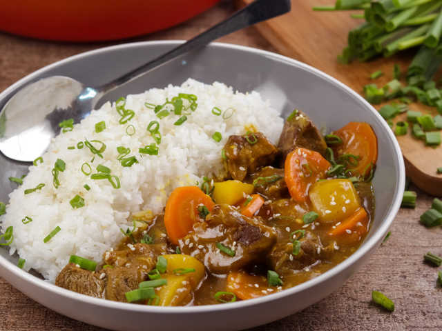

Chicken Curry

My Favorite Food is Curry Rich; What is steamed Rice and hot curry, Which made by my mom
Here is the ingredients and steps to make it:
Those Ingredients make this dish testy and delicious. Aslo they increase the sweet smell of this dish and the dish looks more delicious and testfull
Rate of this Recipi
😀😍😄
Now your curry rice is ready; Enjoy it!
Here some images of Curry Rice Recipe after complete the cooking and garnish.
Chicken Curry
|
Vagetable Curry |

Tomato curries are all the rage in Japan! Made with a simple mixture of canned tomatoes, curry powder, cumin powder, butter, and stock, our version of tomato curry comes with tender potatoes and plenty of sweetness and tanginess!
GRAB THE RECIPE >
This is a Southeast Asian inspired curry made with a mix of red curry paste, coconut milk, stock, and fish sauce. Though it looks fiery, this curry isn’t too spicy and can be enjoyed by most people
GRAB THE RECIPE >
This a traditional creamy Thai yellow curry that we have packed with vegetables. The flavors are mild and sweet, perfect for kids and adults
GRAB THE RECIPE >
Keema curry is another mild and sweet type curry typically made with ground meat only. But we’ve added some chickpeas to make cooking a bit more fun and healthy!
GRAB THE RECIPE >
Thinking of eating less meat? Try using jackfruit as the texture mimics shredded meat. This curry is also tomato based and not spicy at all.
GRAB THE RECIPE >